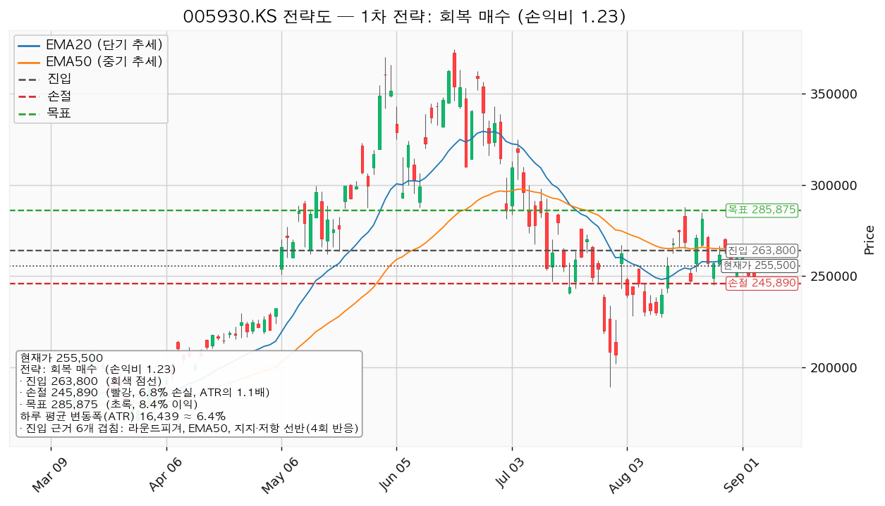
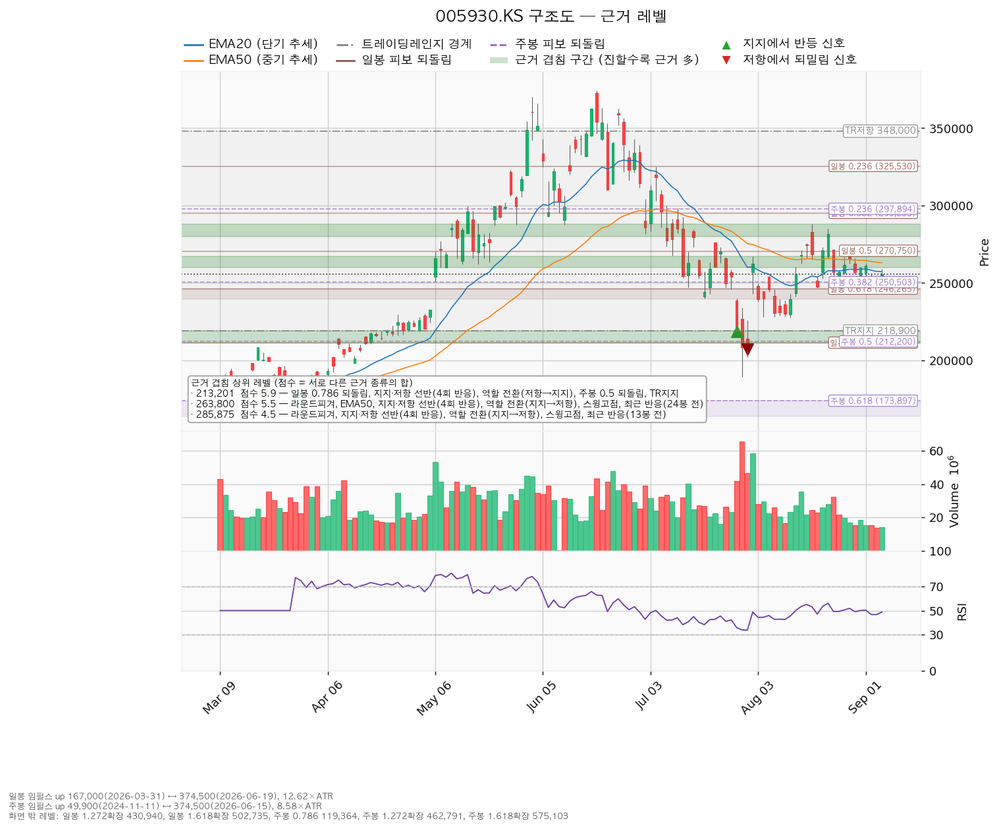
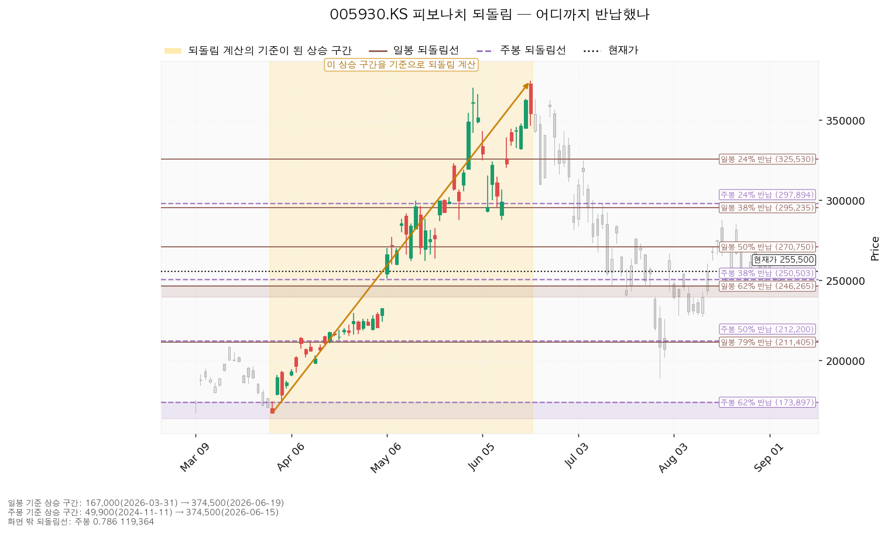
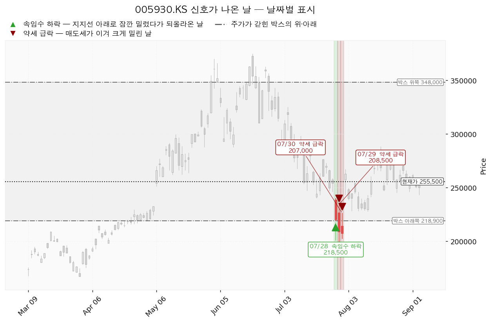

삼성전자(005930.KS)는 D램·낸드 등 메모리 반도체와 파운드리, 스마트폰·가전·디스플레이를 만드는 한국 기업이며, 매출의 큰 부분이 메모리 반도체 업황에 연동됩니다.
| 구분 | 가격 | 판정 방식 | 현재가 대비 | 상태 |
|---|---|---|---|---|
| 회복선(진입 조건) | 263,800원 | 일봉 종가로 회복한 뒤 되돌림에서 지지되는지 | +3.25% (0.50 ATR) | 회복 대기 |
| 집행 손절 | 245,890원 | 도달 시 즉시 청산 — 진입한 경우에만 유효하며, 미진입 상태에서는 아무 의미가 없습니다 | -3.76% (0.58 ATR) | — |
| 관망 종료 기준 | 240,000원 | 일봉 종가가 아래로 마감 / 또는 2026-10-28 실적 | -6.07% (0.94 ATR) | 유지 중 |
| 확인선 | 285,875원 | 일봉 종가 돌파 후 되돌림에서 지지 확인 | +11.89% (1.85 ATR) | 미돌파 |
| 폐기선(구조) | 218,900원 | 이탈 후 3거래일 내 회복 실패 + 반등에서 저항으로 확인 | -14.32% (2.23 ATR) | 유지 중 |
폐기선은 현재가에서 하루 평균 변동폭의 2.23배 아래에 있어 실무상 쓸 수 있는 거리입니다(3배를 넘지 않습니다). 다만 미진입 상태에서 실제로 보실 선은 폐기선이 아니라 관망 종료 기준 240,000원입니다.
확인선 285,875원은 대표 셋업의 목표와 같은 가격입니다. 모순이 아니라 분기점으로 쓰십시오 — 여기서 막히고 되밀리면 그것이 목표였으니 전량 청산이고, 일봉 종가로 넘어서면 상승이 확정된 것이므로 그때는 새 셋업으로 다시 잡습니다. 박스 상단 348,000원은 그 위의 맥락일 뿐이며 이번 리포트의 판단 기준이 아닙니다.
| 항목 | 값 |
|---|---|
| 현재가 | 255,500원 |
| EMA20 / EMA50(20일·50일 지수이동평균) | 257,231원 / 262,998원 — 둘 다 현재가 위 |
| RSI(14) (14일 상대강도, 50이 중립) | 48.8 — 중립 |
| ATR(하루 평균 변동폭) | 16,439원 (주가의 6.43%) |
| 국면 | 횡보 박스 — 추세는 아래를 향하나 박스 구조는 유지 중(하단 사수가 조건) |
| 횡보 박스 | 218,900 ~ 348,000원 (최근 90거래일 기준, 가격이 이 안에 머문 비율 90%, 박스 폭은 하루 변동폭의 7.85배) |
박스는 40·90·180거래일 세 창을 모두 시험해 90거래일 창이 선택됐습니다(조회한 전체 일봉은 726개). 40거래일 창은 폭이 좁고(3.53배) 방향성이 거의 없으며(0.005), 180거래일 창은 아래로 흐르는 정도가 커서(0.576) 90거래일 창이 지금의 가격 움직임을 가장 잘 설명합니다.
이 박스로 아래에서 올라왔습니다. 직전 구간은 131,233~215,500원 박스였고 위로 뚫고 나왔습니다. 아래에서 올라온 박스는 다시 오르기 위한 매물 소화일 수도, 상승을 끝내는 자리일 수도 있어 박스 모양만으로는 갈리지 않습니다. 갈리는 것은 박스 안쪽에서 일어난 일입니다.
박스 안쪽 관측치 — 매집 우위입니다.
| 지지 테스트 | 저가 | 그날 거래량(평소 대비) |
|---|---|---|
| 2026-04-24 | 216,500원 | 1.00배 |
| 2026-07-29 | 189,200원 | 2.18배 |
| 2026-08-04 | 228,000원 | 0.91배 |
| 2026-08-11 | 227,500원 | 0.77배 |
지지 테스트를 반복할수록 그날 거래량이 줄었고(2.18배 → 0.91배 → 0.77배), 저점은 189,200 → 227,500 → 245,000원으로 절상됐습니다. 팔려는 물량이 아래에서 소진되고 있다는 뜻입니다. 상승봉과 하락봉의 거래량비는 1.06으로 미세하게 매수 쪽이며, 이 숫자만으로는 강한 근거가 되지 못합니다.
이번 분석에서 산출된 셋업은 `reclaim_long`(회복 확인 매수) 한 개입니다. 현재 국면이 하락·중립이라 되돌림 매수·돌파 매수는 나오지 않았고, 박스 안쪽이 매집 우위인데도 지지 확인 매수가 나오지 않은 이유는 현재가 바로 아래에 여러 번 지켜진 지지 가격대가 없기 때문입니다(아래쪽 반복 반응 구간은 211,750원·192,000원으로 멀리 떨어져 있습니다). 셋업이 하나뿐이므로 선택의 트레이드오프는 없습니다.
대표 셋업 선정 사유: *"손익비 1.23 × 구조 증명도(회복 확인형) × 근거 겹침 5.5점으로 선정. 저항을 종가로 회복한 뒤에만 진입한다 — 진입가는 불리하나 구조가 먼저 증명된다."*
| 항목 | 값 |
|---|---|
| 셋업 | reclaim_long (회복 확인 매수) — 회복 확인형(구조 증명도 1.0, 가장 높은 등급) |
| 엣지의 종류 | 모멘텀 — "저항을 종가로 되찾으면 그 방향이 이어진다"는 전제 |
| 성격 | 자주 틀리고 소수가 크게 맞는 유형입니다. 승률을 기대하는 셋업이 아닙니다(이 유형의 일반적 성격이며, 이 엔진에서 측정한 값이 아닙니다) |
| 진입 | 263,800원 — 일봉 종가로 회복한 뒤 |
| 진입 근거 겹침 | 5.5점 / 260,000~267,000원 — 근거 5종: 라운드피겨, EMA50, 반복 반응 구간(4회), 역할 전환(지지→저항), 스윙고점. 여기에 24거래일 전 실제로 되밀린 자리라는 가산이 붙습니다 |
| 손절 | 245,890원 — 손절 폭 17,910원 = 하루 평균 변동폭의 1.09배(진입가 대비 -6.79%) |
| 손절 근거 | 근거 겹침 구간(250,000~257,231원, 3.6점) 바로 아래. 구간 안쪽이 아니라 아래에 둔 값이라 손익비가 그만큼 낮게 나옵니다 |
| 목표 | 285,875원 |
| 목표 근거 겹침 | 4.5점 / 280,000~288,000원 — 라운드피겨, 반복 반응 구간(4회), 역할 전환(지지→저항), 스윙고점, 13거래일 전 반응 |
| 손익비 | 1:1.23 (손절 폭 1.09 ATR) |
손익비는 손절을 조여서 만든 숫자가 아닙니다. 손절 폭이 하루 평균 변동폭의 1.09배로 이미 하루치 움직임보다 넓고, 위치도 겹침 구간 아래로 밀어낸 구조적 자리입니다. 즉 이 1:1.23은 구조 그대로의 손익비이며, 별도의 구조 손절 기준 손익비가 따로 계산되지 않았습니다. 1을 넘기는 하나 넉넉한 수준은 아닙니다.

| 단계 | 조건 | 의미 | 행동 |
|---|---|---|---|
| ① 관찰 | 일봉 종가가 263,800원 아래로 마감 | 구조 이탈이 시작된 것이며, 되돌아 올라오면 속임수 하락일 수 있어 아직 무효가 아닙니다 | 신규 진입만 중단. 집행 손절은 그대로 둡니다 |
| ② 경고 | 이탈 후 3거래일 안에 263,800원을 종가로 회복하지 못함 | 저항 회복에 실패했을 가능성이 우세해집니다 | 잔여 비중 축소. 반등이 나오면 이 가격에서의 반응을 확인합니다 |
| ③ 무효 | 반등이 263,800원에서 막히고 그 아래로 되밀림 | 셋업 폐기 — 구조 해석이 틀린 것으로 확정 | 포지션 정리 후 새 구조가 만들어질 때까지 관망 |
집행 손절 245,890원은 이 3단계 판정과 무관하게 별도로 작동합니다. 장중 일시 이탈은 어느 단계에도 해당하지 않습니다.
① 상승 전환
② 횡보 지속 — 부정적인 그림이 아닙니다
③ 시나리오 폐기
현재가 255,500원 주변의 주요 구간입니다. 점수는 서로 다른 근거의 종류가 몇 개 겹쳤는지를 가중합한 값이며, 같은 종류가 여러 개 붙어도 한 번만 셉니다.
| 가격대 | 겹침 점수 | 근거 | 현재가 대비 |
|---|---|---|---|
| 280,000~288,000원 | 4.5 | 라운드피겨 + 반복 반응 구간(4회) + 역할 전환(지지→저항) + 스윙고점 + 13거래일 전 반응 | +11.89% (목표·확인선) |
| 270,000~270,750원 | 2.1 | 라운드피겨 + 일봉 0.5 되돌림 + 24거래일 전 반응 | +5.82% |
| 260,000~267,000원 | 5.5 | 라운드피겨 + EMA50 + 반복 반응 구간(4회) + 역할 전환(지지→저항) + 스윙고점 + 24거래일 전 반응 | +3.25% (회복선) |
| 250,000~257,231원 | 3.6 | 라운드피겨 + 주봉 0.382 되돌림 + EMA20 + 8거래일 전 반응 | 현재가가 이 안에 있음 |
| 240,000~246,265원 | 3.3 | 스윙저점 + 라운드피겨 + 일봉 0.618 되돌림 + 8거래일 전 반응 | -6.07% (관망 종료 기준) |
| 227,500~230,000원 | 2.3 | 스윙저점 + 라운드피겨 + 17거래일 전 반응 | -10.96% |
| 211,405~218,900원 | 5.9 | 일봉 0.786 되돌림 + 반복 반응 구간(4회) + 역할 전환(저항→지지) + 주봉 0.5 되돌림 + 박스 하단 | -14.32% (폐기선 구간) |
가장 두꺼운 구간은 위가 아니라 아래(211,405~218,900원, 5.9점)에 있습니다. 폐기선을 박스 하단에 둔 근거가 여기입니다. 위쪽에서 가장 두꺼운 곳은 260,000~267,000원(5.5점)이고, 이 자리가 곧 회복선입니다. 이 가격대는 5월까지 지지였다가 이제는 저항으로 역할이 바뀐 자리이며, 가장 최근인 2026-09-01에도 반응이 있었습니다. 그래서 "돌파했다"고 인정하려면 종가로 넘겨야 합니다.

일봉 되돌림은 167,000원(2026-03-31) → 374,500원(2026-06-19) 상승 구간을 기준으로 계산됐습니다(구간 폭이 하루 변동폭의 12.62배로 충분히 큽니다).
| 되돌림 | 가격 | 현재 상태 |
|---|---|---|
| 0.236 (24% 반납) | 325,530원 | 이미 아래로 통과 |
| 0.382 (38% 반납) | 295,235원 | 이미 아래로 통과 |
| 0.5 (50% 반납) | 270,750원 | 현재가 위 — 되찾아야 할 자리 |
| 0.618 (62% 반납) | 246,265원 | 8거래일 전 이 부근에서 반응 후 반등 |
| 0.786 (79% 반납) | 211,405원 | 박스 하단과 겹침 |
현재가 255,500원은 62% 반납선(246,265원)과 50% 반납선(270,750원) 사이에 있습니다. 62% 되돌림 부근에서 한 번 반응이 나왔다는 사실이 이번 관망의 근거 중 하나입니다. 다만 되돌림선 하나만으로는 근거가 얇아, 겹침 5.5점이 걸린 263,800원 종가 회복을 진입 조건으로 씁니다.
주봉 되돌림은 49,900원(2024-11-11) → 374,500원(2026-06-15) 상승 구간 기준이며, 현재가는 주봉 0.382 반납선(250,503원) 바로 위입니다. 더 큰 시계에서는 이제 막 38%를 반납한 자리입니다.

| 날짜 | 신호 | 가격 | 해석 |
|---|---|---|---|
| 2026-07-28 | spring(속임수 하락) | 218,500원 | 박스 하단 아래로 밀렸다가 되돌아온 움직임 |
| 2026-07-29 | sow(약세 신호) | 208,500원 | 그 다음 날 다시 밀림 — 평소의 2.18배 거래량으로 189,200원까지 저가 형성 |
| 2026-07-30 | sow(약세 신호) | 207,000원 | 이틀 연속 약세 |
7월 28일 속임수 하락 뒤에 이틀간 약세 신호가 이어졌으므로, 이 신호만으로 매집을 단정할 수 없습니다. 다만 그 뒤 8월의 지지 테스트(228,000원·227,500원)가 평소보다 적은 거래량으로 이뤄지고 저점이 절상되며 245,000원까지 올라온 것이, 국면 후보를 매집(재축적)으로 두게 한 근거입니다. 이 판정은 218,900원을 지키는 동안에만 유효합니다.

| 항목 | 값 |
|---|---|
| 애널리스트 | 37명 · 투자의견 strong_buy |
| 목표주가 | 평균 472,178원 / 최저 210,000원 / 최고 725,000원 |
| 현재가의 위치 | 최저 목표보다 +21.7% 위, 평균 목표보다 -45.9% 아래 |
| 후행 PER | 제공되지 않았습니다 — 이번 조회에서 값이 비어 있어 후행 배수는 인용하지 않습니다 |
| 선행 PER | 올해 추정이익 기준 5.27배, 내년 추정이익 기준 3.68배 |
| 추정이익(EPS) | 올해 48,480원(성장률 +6.3%) / 내년 69,348원(성장률 +43.0%) |
| 추정치 방향(최근 90일) | 올해 +8.1% / 내년 +23.1% — 둘 다 상향 |
(a) 배수는 둘 다 봐야 합니다. 후행 PER은 이번 조회에서 값이 없어 쓸 수 없습니다. 선행으로만 보면 올해 이익 기준 5.27배, 내년 이익 기준 3.68배입니다. 두 배수의 차이는 내년 이익이 +43.0% 늘어난다는 추정에서 나옵니다. 이 정도 배수는 메모리 업종의 이익이 정점 부근일 때 흔히 나타나는 모습이므로, 낮은 배수 자체를 저평가의 근거로 쓰지는 않습니다.
(b) 목표주가는 분포로 봅니다. 평균 472,178원만 인용하면 오해를 부릅니다. 37명의 목표는 210,000원에서 725,000원까지 3.5배 차이로 벌어져 있으며, 현재가는 그 최저치보다 +21.7% 위에 있습니다(최저 목표 아래로 내려간 상태는 아닙니다). 이렇게 넓게 벌어진 분포는 메모리 업황의 방향에 대해 시장 참여자들의 견해가 갈려 있다는 뜻이고, 평균 하나를 근거로 삼기 어렵다는 뜻이기도 합니다.
(c) 하락의 정체 — 사업 악화가 아니라 배수 수축입니다. 6월 고점 374,500원에서 현재 255,500원까지 밀리는 동안, 애널리스트들의 이익 추정치는 오히려 90일간 올해 +8.1%, 내년 +23.1% 상향됐습니다. 이익 전망이 내려가며 가격이 빠진 것이 아니라, 같은 이익에 시장이 매기는 배수가 줄어든 것입니다. 따라서 이번 하락을 근거로 "실적이 꺾였다"거나 "주도주에서 밀려났다"고 적지 않습니다.
(d) 현금흐름 — 적자가 아닙니다. 영업활동 현금흐름 약 196.7조원, 잉여현금흐름 약 69.6조원으로 둘 다 흑자입니다. 설비투자는 직전 대비 -3.0%로 오히려 줄었습니다. 현금흐름 쪽에서 지금 걸 확인 항목은 없습니다.
(e) 상승 여력의 분해. 평균 목표 472,178원은 현재가 대비 +84.8%입니다. 이를 나누면 — 내년 추정이익 69,348원 기준으로 그 목표가 함의하는 배수는 6.81배이고, 현재가가 올해 이익에 매기고 있는 배수는 5.27배입니다. 즉 상승분 84.8% 중 이익 증가(48,480 → 69,348원, +43.0%)가 절반가량을, 배수 확장(5.27 → 6.81배, +29.2%)이 나머지를 차지합니다. 이익 증가만으로는 평균 목표에 닿지 않으며, 배수가 다시 벌어져야 한다는 조건이 붙어 있습니다.
주도주 여부. 이익 추정치가 계속 상향되고 있다는 점에서 실적 측면의 지위는 유지되고 있습니다. 다만 가격은 6월 고점 이후 박스 안에 갇혀 있고 EMA20·EMA50 모두 현재가 위에 있어, 가격 측면에서는 아직 주도 구간이 아닙니다. 이 두 층위는 시계가 다릅니다 — 컨센서스는 12개월, 이번 셋업은 수 주입니다. 결론이 갈려도 모순이 아니며, 이번 리포트의 답은 진입·손절·목표로 냅니다.
| 날짜 | 이벤트 | 볼 것 |
|---|---|---|
| 2026-10-28 | 3분기 실적 발표 | 올해 EPS 추정 48,480원(추정 범위 41,963~60,367원) 대비 실제치, 그리고 발표 후 내년 추정치 69,348원이 유지·상향되는지 |
가격 기준 외에 날짜가 정해진 확인 이벤트는 위 하나입니다.
폐기선 218,900원은 현재가에서 하루 평균 변동폭의 2.23배 아래로, 실무상 작동하는 거리입니다. 여기에 더해 가격이 아닌 무효화 조건을 겁니다.
하루 평균 변동폭이 주가의 6.43%로, 8%를 넘지는 않습니다. 손절 폭은 6.79%(하루 변동폭의 1.09배)로 하루 움직임보다 넓게 잡혀 있어, 논지와 무관한 장중 흔들림만으로 체결될 위험은 크지 않습니다. 다만 손익비 1:1.23은 여유가 큰 값이 아니므로, 위에 적은 13% 비중 제한을 반드시 지키십시오.
기본 시계는 수 주입니다. 컨센서스 목표주가는 12개월 시계이므로 이번 셋업의 목표 285,875원과 직접 비교하지 않습니다.